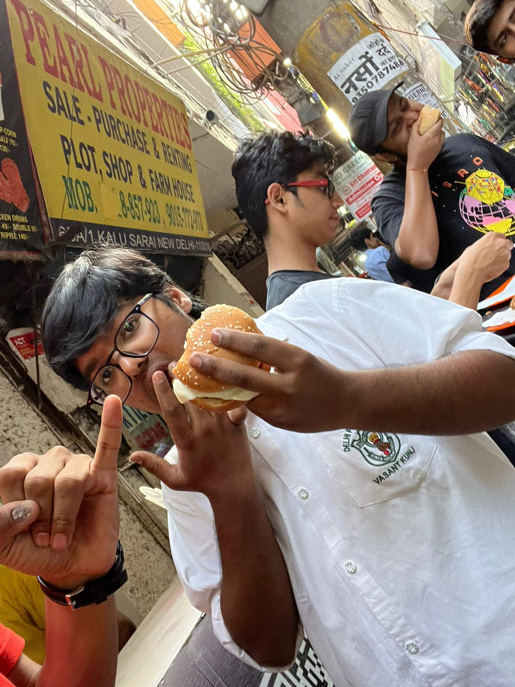

Engineering Mindset & Biography
From crafting autonomous agent architectures to community leadership and exploring the world beyond the screen.
Architecting the Next Wave of Intelligent Systems
I am an AI/ML Engineer currently pursuing my B.Tech in Artificial Intelligence & Machine Learning at Symbiosis Institute of Technology, Pune. My focus lies squarely at the convergence of machine learning and production engineering.
While many projects stop at fine-tuning or proof-of-concept Jupyter notebooks, my passion is building the connective tissue: autonomous "Think-Act-Observe" agentic loops, sub-200ms streaming WebSockets, vector-indexed hybrid RAG pipelines, and resilient multi-database state machines.
As Technical Head at CodeXSIT, I lead hands-on workshops guiding hundreds of fellow engineers through Deep Learning, Agentic AI, and production MLOps (Docker, AWS, and Cloudflare).
Technical Arsenal
Education
Languages
Looking to Collaborate?
I'm always keen to discuss autonomous agent loops, retrieval architectures, or AI research.
Initiate ConversationBeyond the Terminal
When I'm not compiling agent loops or tuning retrieval embeddings: life, energy, good food, and great times.


